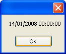

Dates and Times in C# .NET
At some stage of your programming career, you'll need the ability to manipulate dates and time. A typical example would be a database programme where you want to record when an entry was made, especially if it's an order for a product. Or if you want to, say, calculate how many days it's been since an order was placed.
Start a new project for this. Add a button to your new form, and double click it to get at the code.
An inbuilt structure you can use to manipulate dates is called DateTime. Add this to you button code:
DateTime theDate;
theDate = DateTime.Now;
MessageBox.Show( theDate.ToString() );
After setting up a DateTime variable called theDate, we have this line:
theDate = DateTime.Now;
The Now property returns the current system date and time of your computer, wherever you are in the world.
The third line in our code converts the DateTime into a string and then displays it in a message box. When the code is run, and the button clicked, the message box will be something like this:

This is the date in UK format (day first, then month), followed by the current time (hours, minutes and seconds).
You can also have this, instead of Now:
theDate = DateTime.Today;
And even this
theDate = DateTime.UtcNow;
Utc is something called Coordinated Universal Time, or International Atomic Time.
Try all three in your code and see how they differ.
To get at just the year, or the month, or the day, take a look at the IntelliSense
list when you type the dot after DateTime:
If you click on Day to highlight it, you'll see that it is an Integer:
To use this, then, you can set up a new integer variable and hand it the day:
theDate = DateTime.UtcNow;
int theDay = theDate.Day;
The Month and Year are also Integers, so the code is similar:
int theMonth = theDate.Month;
Or
int theYear = theDate.Year;
You can also convert your date to a string, and use something called a Format Provider. Try this code:
DateTime theDate = DateTime.UtcNow;
string custom = theDate.ToString("d");
MessageBox.Show(custom);
When you run your programme and click the button, the date displays in this format:
14/04/08
Change the "d" in the code above to "D" (capital D instead of lowercase). When you run the code, the date is displayed like this:
14 April 2008
Here's a list of letters you can use, and what they will display. Try a few and see for yourself:
Another thing you can do with DateTime is to specify a format. Type the following:
DateTime firstDate = new DateTime
After the final "e", type a round bracket. You should see this:
There are 12 different ways to use the DateTime structure. Each one is giving you the option of a date/time format. Examine option 4 of 12:
You can just type some numbers here:
DateTime firstDate = new DateTime(2008, 01, 14);
What you'll get back is the Date you specified. But you'll also get the time as a series of zeros:

If you want to calculate the difference between one date and another, then a more precise structure is used with DateTime - TimeSpan. Here's how to use it:
DateTime firstDate = new DateTime(2008, 01, 14);
DateTime secondDate = DateTime.Parse("1 Feb 2008");
TimeSpan dateDiff;
dateDiff = secondDate.Subtract(firstDate);
MessageBox.Show("Date diff:" + dateDiff.ToString() );
The first line sets up a date: the 14th of January 2008. The second line sets up a date in a different way:
DateTime secondDate = DateTime.Parse("1 Feb 2008");
After the dot of DateTime, we're using Parse. In between the round brackets of Parse, simply type your date between double quotes.
When you subtract one date from another, the answer is returned as a TimeSpan structure. This uses similar methods and properties as DateTime. One of the options is Subtract:
TimeSpan dateDiff;
dateDiff = secondDate.Subtract( firstDate );
After typing a date then a dot, use the Subtract method. In between the round brackets of Subtract, you need another date - the one you're trying to subtract. When the code is run, it will calculate the difference between the two dates.
You can also add date and time values to ones you already have. Examine this code:
firstDate = firstDate.AddDays(30);
MessageBox.Show( firstDate.ToString("D") );
Now we're using AddDays after our firstDate variable. In between the round brackets of AddDays, type how many days you want to add.
When the IntelliSense list appears, have a look at other date and time values you can add: AddMonths, AddYears, etc.
But that's it for this beginners course on Visual C# .NET. We hope you enjoyed
it, and wish you all the best for your future programming career. The book version
of this course has lots more lessons and tutorials. If you want to buy it, click
a link at the top of these pages.